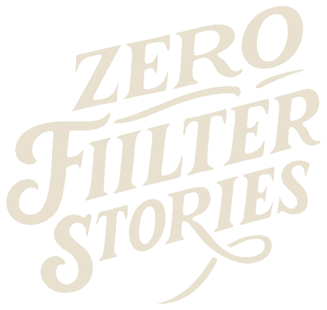

Zero Filter Stories — capturing life’s raw beauty, unfiltered
At Zero Filter, we showcase the true essence of every moment—unedited, authentic, and full of life. From weddings and special events to distinctive brand visuals, we create stories that feel like you.
- Unfiltered.
- Unforgettable.
- Unscripted.
The people behind the moments
Who are we
At Zero Filter Stories, we believe every love story is unique—filled with emotion, little details, and unforgettable moments worth cherishing forever. We’re a passionate wedding photography and cinematography team devoted to capturing the true essence of your day through timeless photographs and heartfelt films.
Rooted in authenticity, creativity, and care, we go beyond simply documenting a wedding. From intimate ceremonies to grand celebrations, we capture the laughter, happy tears, meaningful glances, and the connections that make your story yours.
What we believe
Our vision
To create unfiltered, authentic visuals that feel like you. Every project is shaped around your story, with thoughtful, high-quality work that feels as special as the moments we capture.
How we see it
Every frame holds a feeling
We preserve your most precious moments with honesty and artistry. More than photographs and films, we create a heartfelt retelling of your love story—one you can return to for years to come.
Why choose us
-
Authentic, unfiltered moments
We capture real emotion as it unfolds—creating timeless photographs and films that feel true to your story.
-
Personalized storytelling
Every couple is unique. We tailor our approach and creative style to reflect your personality, your people, and your day.
-
Creative & candid expertise
From cinematic portraits to spontaneous candids, we bring artistry and care to every frame.
-
Reliable, professional service
Clear communication, thoughtful planning, and dependable delivery help you feel at ease from start to finish.